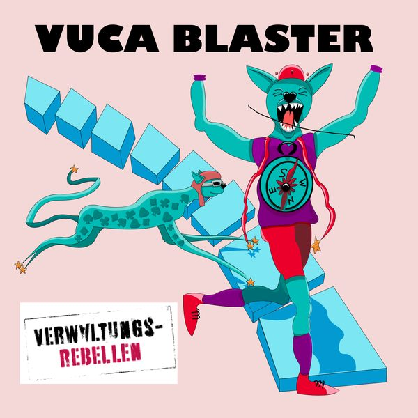

#6
Die Verwaltungsrebellen im Interview
Die Verwaltungsrebellen zeigen, dass Verwaltung auch anders kann als öde, langsam und bürokratisch.
· 47 Min.
mit Sabine Schwittek und Dorothea Herrmann
Gründerinnen der Verwaltungsrebellen
- mutig · Hauptwert
- verbindend
Diese Folge hören
Dort hilft jedes Abo und jede Bewertung dem Podcast.
Worum es geht
Die Verwaltungsrebellen im Interview mit Dörte Deniz. Sabine Schwittek und Dorothea Herrmann haben im Jahr 2019 die Verwaltungsrebellen gegründet. Die Verwaltungsrebellen sagen " Die Verwaltung kann auch anders als öde, langsam und bürokratisch! Die "Verwaltungsrebellen" Community wächst rasant und Sabine und Dorothea plaudern aus dem Nähkästchen über Ihren Beginn, ihre (Lern-)Erfahrungen, ihre Motivationen und laden Andersdenker*Innen und Andersmacher*Innen innerhalb und außerhalb von Verwaltungen zum Mitmachen ein. Hört unbedingt rein, wenn Ihr entdecken wollt wie viele wunderbare Menschen und Initiativen es schon gibt und wie viel Power und Energie hinter den Verwaltungsrebellen stecken.
Seit August 2020 ist das „Verwaltungsrebellen-Labor“ an den Start gegangen. Es ist eines von bundesweit 13 Projekten, die das BMI im Rahmen des Programms „Regionale Open Government Labore“ mit je 180.000 € fördert. In Kooperation mit dem Kreis Wesel, der Stadt Essen und der Stadt Lünen möchten die Verwaltungsrebellen innovative, kreative Zusammenarbeit innerhalb der Verwaltung sowie zwischen Verwaltung und Zivilgesellschaft stärken und voneinander lernen.
https://verwaltungsrebellen.de/ https://www.synexa.de/
Seit August 2020 ist das „Verwaltungsrebellen-Labor“ an den Start gegangen. Es ist eines von bundesweit 13 Projekten, die das BMI im Rahmen des Programms „Regionale Open Government Labore“ mit je 180.000 € fördert. In Kooperation mit dem Kreis Wesel, der Stadt Essen und der Stadt Lünen möchten die Verwaltungsrebellen innovative, kreative Zusammenarbeit innerhalb der Verwaltung sowie zwischen Verwaltung und Zivilgesellschaft stärken und voneinander lernen.
https://verwaltungsrebellen.de/ https://www.synexa.de/
